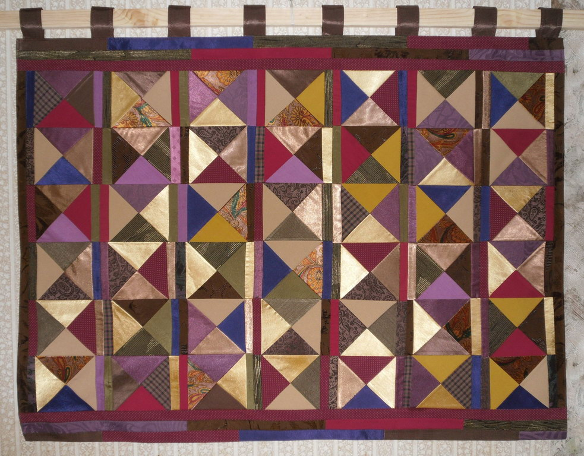
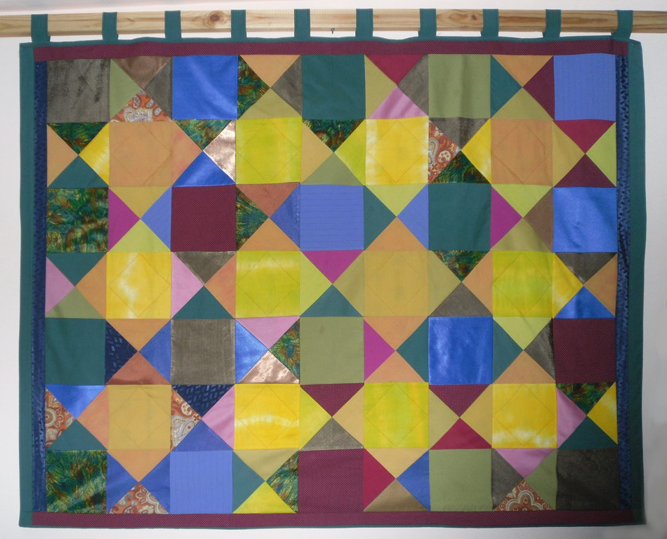

В американском фильме «Высокая мода» (режиссер Робер Алтман) вы можете увидеть элегантного француза, деятеля индустрии мод, одетого в костюм, сшитый из лоскутов (заплат, тряпочек) — иными словами, из нескольких десятков patch.
Такого же типа костюм смастерил себе известный писатель-авангардист Эдуард Лимонов; фотография его в этом костюме была в своё время опубликована в массовой печати.
Каждый из нас может видеть на улицах городов подобные одежды, как бы собранные из лоскутов. Это — элитарная мода, восходящая к самому началу ХХ века, к образу арлекинов и паяцев Пикассо, Сезанна, Руо, цирковых комиков и уличных клоунов незапамятных времен. В наши времена тряпичный набор в одежде — знак внутренней свободы, иронического отношения к жизни и презрения к материальным благам.
В то же время пэчворк — традиционный стиль декоративно-прикладного искусства славянских и многих других народов. Но не думайте, что это всего лишь досужее занятие домашних хозяек, или самодеятельное творчество людей, мягко выражаясь, с ограниченными финансовыми возможностями (иными словами, бедных людей, которым не по средствам купить ковер в магазине).
Не так просто решить, беднее ли они тех, кто покупает вещи, сделанные машинами, — стандартные, типовые, холодные (даже несмотря на яркую раскраску), притворяющиеся красивыми. Они готовы отдаться любому за деньги. Для человека, который купил эту вещь, она чужая, и только со временем может быть освоена, приручена. А может быть и выброшена вскоре после покупки: не нравится, не подошла, быстро испортилась... Часто я видела, как молодые женщины отдают кому-то совсем новые кофты, брюки и т.д., купленные в магазине.
Богат ли тот, кто купил вещь, кто живет в окружении равнодушных или недружелюбных вещей, изготовленных равнодушными машинами? Не богаче ли тот, кто сделал вещь сам, по своему вкусу и темпераменту? Такая вещь, и особенно пэчворк, родственна человеку, она хранит память о предках и о прежних временах. Покрывало или настенный ковер, сшитый из лоскутов — это как семейный альбом: вот кусочки от бабушкиной юбки, вот лоскуты от детской кофточки, вот остатки от платья, в котором я была на выпускном балу...
Каждый patch пробуждает воспоминания о каком-то времени жизни, об эпизодах и приключениях, о мыслях и переживаниях. Не это ли настоящее богатство — память о былом, о близких?
Пэчворк — изделие уникальное, единственное и неповторимое.
Ему свойственны не только индивидуальные черты, но и всеобщие, роднящие это произведение со всеми другими того же рода, и даже более: в нем воплощены и выражены идеи высшего порядка — метафизические, философские, общечеловеческие.
Пэчворк, как никакой другой вид рукоделия, содержит все эти смыслы и категории. В его рисунке заложены архетипические, первичные формы: треугольник, квадрат, прямая линия. Этим он сродни абстрактному искусству геометрического стиля.
Строгость композиции пэчворка равнозначна утверждению высшего закона в жизни общества — порядка, безусловного выполнения моральных заповедей и норм социального бытия.
В то же время отличительная особенность пэчворка — свобода и спонтанность, с которой он создаётся. Рука художника как бы бессознательно выбирает очередной лоскут из мешка, подчиняясь сиюминутному настроению, или, может быть, сознательному замыслу, или тому и другому одновременно. Художник, выполняющий работы этого жанра, должен безукоризненно владеть цветом как средством выразительности и эмоционального воздействия на зрителя, знать законы сочетаемости красок и их оттенков, чувствовать цветовую гармонию и меру в употреблении различных фактур тканей. В этом обаятельном жанре сотрудничают наука и искусство.
Один из секретов его обаяния состоит в том, что это искусство — по природе своей безыскусно. Его могут творить люди неискушенные, то есть наивные, как сама природа. Можно понять Пикассо, который восхищался пластикой примитивных народов Африки и живописью украинской крестьянки Катерины Белокур. Также понятен неослабевающий интерес ХХ века к творчеству Анри Руссо, Ивана Генералича, Нико Пиросманашвили и многих других примитивистов из разных стран.
Авангард нуждается в примитиве, искушенность отдыхает в общении с наивностью, черпает силы в самобытном, самородном, самособойном.
Работы Анны Королёвой — не самодеятельность, но истинный профессионализм. Они разнообразны по композиции, фактуре, колориту, и, конечно, по содержанию (выразительности). В каждой из них есть сюжет, отображенный отчасти в названии. Здесь есть вещи спокойные, весёлые, нарядно-торжественные, грустно-задумчивые. Есть подобные народной песне, серенаде или ноктюрну, восточному танцу или гимну.
Эти текстильные панно уместнее всего в доме, где живет семья. Они, по-моему, выполняют важную социальную функцию: создают атмосферу уюта, согласия, мира, и тем самым укрепляют семью (ячейку государства — не будем этого забывать). Пэчворк в доме — своего рода гипногештальт, создающий у обитателей дома позитивное мировосприятие и энергетику.
Убедитесь в этом сами.
«Ананас»
«Веселый»
«Золото, ладан и смирна»
«Ивáнов день»
«Каляда»

«Матьковцы»
«Ночное»

«Предвкушение лета»
«Синее и зеленое»
Л. Миронова,
09.10.2011